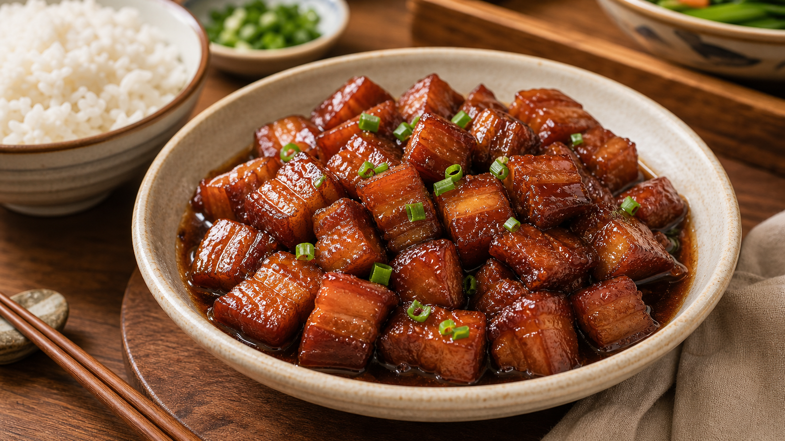
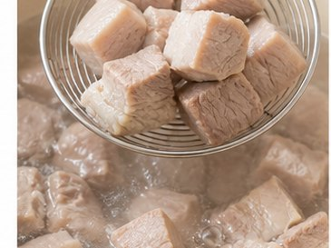
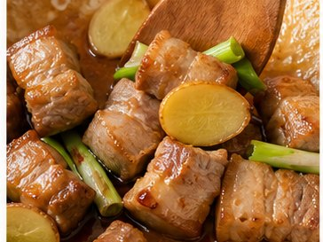
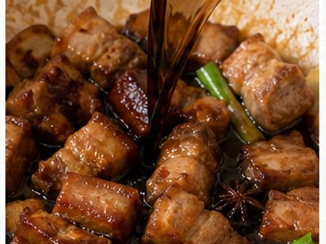
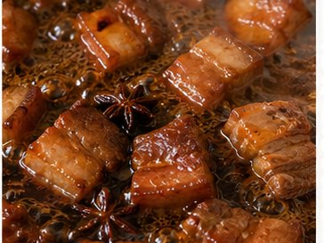
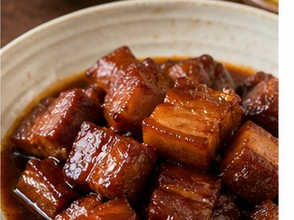

Reunion Dinner Recipe
Braised Pork
Warmth, Brightness and Prosperity

About This Dish
For some Mainland Chinese and Taiwanese immigrant families, braised pork is a familiar home dish. Its rich colour and slow-cooked flavour often evoke comfort, care and memories of family meals.
Ingredients
- Pork belly slices (600 g)
- Ginger (5 slices)
- Spring onion (2, cut into sections)
- Garlic (3 cloves)
- Soy sauce
- Dark soy sauce
- Cooking wine
- Rock sugar or brown sugar (30 g)
- Star anise (2)
- Bay leaf (1, optional)
- Water
Method
-

Cut the pork into large pieces, place the pork belly in cold water with 2 slices of ginger and 1 tbsp cooking wine. Bring to the boil and simmer for about 8 minutes. Rinse and drain. -

Fry sugar gently to create a caramel colour, then add pork and ginger, spring onion, garlic, star anise and bay leaf. -

Add 2 tbsp soy sauce, 1 tbsp dark soy sauce, 1 tbsp cooking wine. Pour in enough hot water to just cover the pork. Bring to the boil, then reduce to low heat. -

Cover and simmer for about 1 hour, until the pork becomes tender and the sauce thickens. -

Serve with rice or as part of a shared reunion dinner.
Allergens
- Soy
- May contain gluten depending on soy sauce brand
Please check product labels carefully, especially for sauces and prepared ingredients.